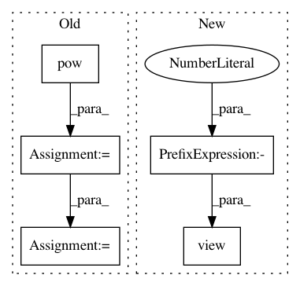

cf1cc19bb79ae4128ef5437279de475835374a46,benchmark/runtime/dgl/train.py,,train_runtime,#Any#Any#Any#Any#,9
Before Change
mask = torch.tensor(data.train_mask, dtype=torch.uint8, device=device)
y = torch.tensor(data.labels, dtype=torch.long, device=device)[mask]
g.add_edges(g.nodes(), g.nodes())
norm = torch.pow(g.in_degrees().float(), -0.5)
norm[torch.isinf(norm)] = 0
g.ndata["norm"] = norm.unsqueeze(1).to(device)
model = Net(g, x.size(1), data.num_labels).to(device)
model.train()
optimizer = torch.optim.Adam(model.parameters(), lr=0.01)
After Change
for epoch in range(epochs):
optimizer.zero_grad()
out = model(x)
loss = F.nll_loss(out[mask], y.view(-1))
loss.backward()
optimizer.step()
In pattern: SUPERPATTERN
Frequency: 3
Non-data size: 5
Instances
Project Name: rusty1s/pytorch_geometric
Commit Name: cf1cc19bb79ae4128ef5437279de475835374a46
Time: 2019-03-19
Author: matthias.fey@tu-dortmund.de
File Name: benchmark/runtime/dgl/train.py
Class Name:
Method Name: train_runtime
Project Name: rusty1s/pytorch_geometric
Commit Name: 6ad34e5887f847aeb9f681e8f290d5877b76e52b
Time: 2020-05-13
Author: matthias.fey@tu-dortmund.de
File Name: torch_geometric/nn/models/schnet.py
Class Name: GaussianSmearing
Method Name: forward
Project Name: rusty1s/pytorch_geometric
Commit Name: d08f673481a2cfaa0ce702e80cc22cdd25e600e5
Time: 2020-05-31
Author: matthias.fey@tu-dortmund.de
File Name: torch_geometric/nn/models/schnet.py
Class Name: GaussianSmearing
Method Name: forward